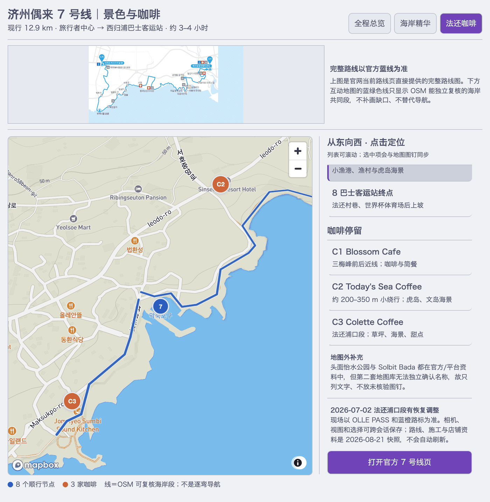
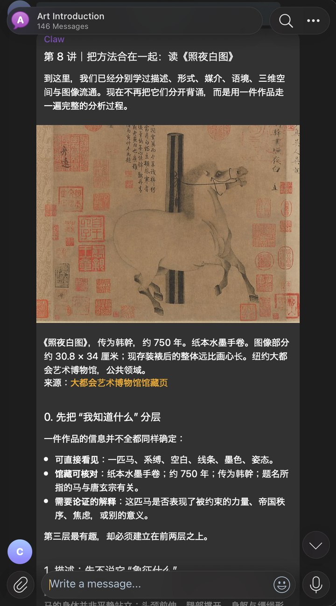
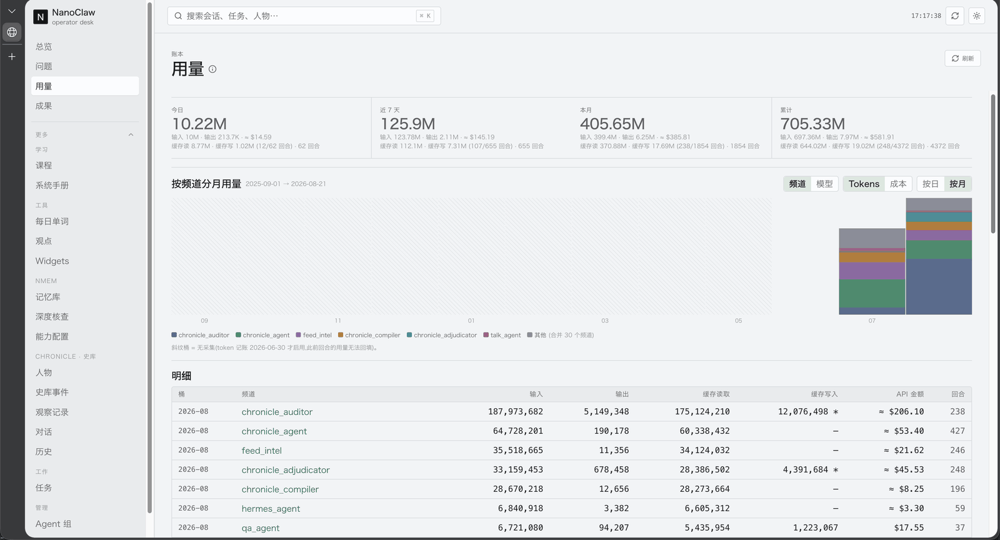

E2E: Efficient Filtered AKNN Search via Adaptive Termination
Wenxuan Xia†, Mingyu Yang†*, Wentao Li, Wei Wang*.
ACM SIGKDD Conference on Knowledge Discovery and Data Mining, 2026.
PhD student in Data Science and Analytics
I am a PhD student at The Hong Kong University of Science and Technology (Guangzhou). My research focuses on efficient vector search and data systems, particularly approximate nearest-neighbor search, filtered search, and graph-based vector indexes.
Outside research, I enjoy building personal agent systems and small tools for learning, research, and everyday workflows.
Wenxuan Xia†, Mingyu Yang†*, Wentao Li, Wei Wang*.
ACM SIGKDD Conference on Knowledge Discovery and Data Mining, 2026.
Mingyu Yang, Wenxuan Xia, Wentao Li, Raymond Chi-Wing Wong, Wei Wang*.
Proceedings of the VLDB Endowment, 19(4): 617–630, VLDB 2026.
Wenxuan Xia, Mingyu Yang, Wentao Li, Wei Wang.
arXiv preprint, 2026.
I maintain a private fork of NanoClaw: an always-on agent harness that runs Claude- and Codex-style agents behind Telegram and other channels. I started it when OpenClaw was first taking off — before "agent harness" had become a common name for this kind of system — so it naturally belongs to the same family as the many harnesses that have appeared since. The goal was never to build yet another general-purpose harness with better benchmark numbers. What I care about is fitting this one to needs of my own that off-the-shelf assistants don't cover:
The project is also an experiment on itself: how to develop and operate a large, fast-moving codebase in the age of AI engineering. The harness carries its own workflow guards, design-doc discipline, and an operator desk for observability — the usage ledger below is one of its panels.



The repository stays private because personal data remains in its history, and the journal pages are not shown because they name real people. The screenshots above are real, unstaged output from my running instance.